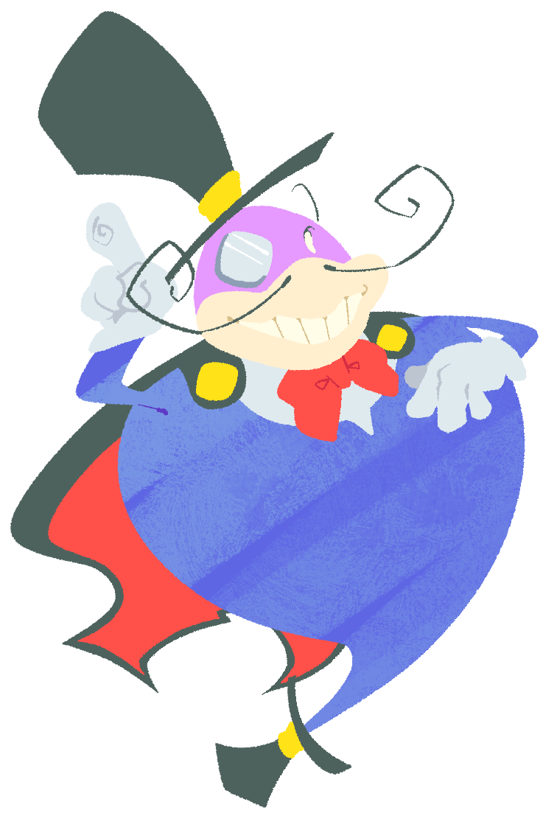

Baron Magic (Male)A large mysterious, charismatic magician. He is seemingly a bird and is the most popular member of the Magic Group. He is an enigma to Kururin, and initially comes off as a vague threat being the "antagonist" of Kururin Paradise, but turns out to actually be a good guy. He is close friends with Totorin. Unlike the other Magic Group members, he did not become a shopkeeper in Kururin Squash!, but still shows up in the "Kururin Paradise" interface style. |
 |